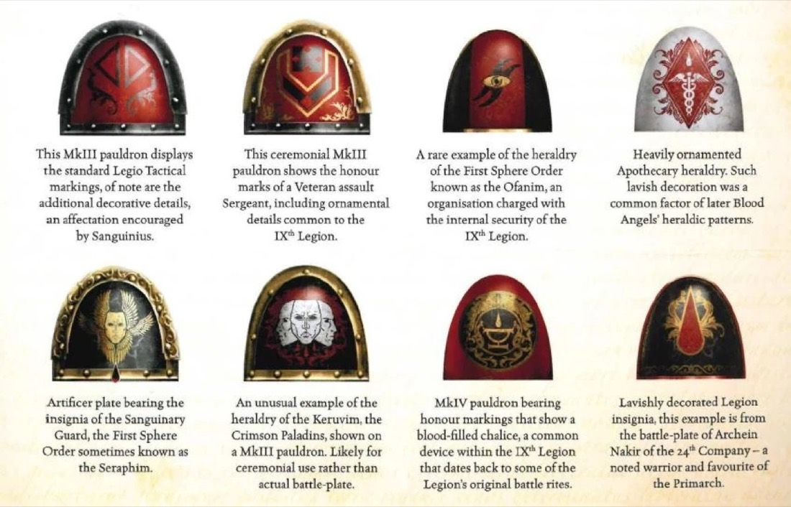

Blood Angels
| Blood Angels IX Legion; the Sons of the Angel | |
|---|---|
 Heraldry of the Legion, including the Sanguinary Guard and the chalice device, from a Legion armorial | |
| Founding | First Founding (M30) |
| Legion number | IX |
| Primarch | Sanguinius |
| Chapter Master | Commander Dante, Lord of Baal; Regent of the Imperium Nihilus |
| Homeworld | Baal, with the moons Baal Prime and Baal Secundus |
| Fortress | Arx Angelicum, Baal |
| Allegiance | Loyalist; Imperium of Mankind |
| Colours | Red and black |
| Battle cry | "For the Emperor and Sanguinius! Death! Death!" |
| Organisation | Modified Codex; Sanguinary Guard; Sanguinary Priesthood; Death Company |
| Combat doctrine | Assault and jump pack warfare; swift, aggressive, daring |
| Gene-seed | The Red Thirst and the Black Rage; great longevity |
| Notable battles | |
| Signus Campaign, Siege of Terra, the Armageddon wars, the Devastation of Baal | |
| Successors | |
| The Sanguinary Brotherhood, among them the Flesh Tearers, Blood Drinkers, Lamenters, Angels Encarmine, Angels Sanguine and Knights of Blood | |
The Blood Angels are the IX Legion of the Space Marine Legions and, since the Second Founding, a Space Marine Chapter of the Adeptus Astartes. They were led in the Great Crusade and the Horus Heresy by the primarch Sanguinius, the winged "Great Angel", the most beloved of the Emperor's sons, and they hold the Baal system in the Ultima Segmentum as their domain. The Chapter is renowned for its grace and for its wars of speed and assault, and equally notorious for two flaws in its gene-seed, the Red Thirst and the Black Rage, which afflict the Blood Angels and most of their Successors.[1][2]
The Blood Angels defended the Imperial Palace at the Siege of Terra and mourned the death of their primarch at the hands of Horus. After the Second Founding they became one of the most widely admired Chapters, and Chapter Master Dante, who has lived for well over a thousand years, became one of the Imperium's foremost soldiers. In the last decades of the 41st millennium the Chapter suffered near annihilation in the Devastation of Baal, the assault of Hive Fleet Leviathan on its homeworld, and was saved by the opening of the Great Rift and the arrival of the Indomitus Crusade. In the Era Indomitus Dante serves as Regent of the Imperium Nihilus for the Lord Commander, Roboute Guilliman.[3]
Legion era
[edit]The Revenant Legion
[edit]The IX Legion existed before its primarch was found. It was among the largest of the earliest Legions, and was formed from veterans of the Unification Wars. During the early Great Crusade the Emperor sent it to the moons of Neptune to hold the outer system in place while Saturn and Mars were brought to heel, and the Legion, twelve thousand strong, disappeared for years. When the Emperor returned to the outer system the Legion's survivors were found alive, and they were afterwards known as the Revenant Legion. The Legion's later work was among the most brutal of the crusade: it fought in the worst of the war zones, among them the world of Kiy-buran, where its warriors faced cannibal mutants, and it acquired a reputation for cold fury. Its warriors developed the practice of consuming their fallen captains to preserve their skills, and recruits took the names of those whose gifts they inherited. Its ranks were riddled with charnel cults, and it had no primarch to guide it.[2][4]
Sanguinius
[edit]
The primarch's gestation pod fell to the moon of Baal Secundus, a world of radiation-scoured deserts whose human survivors lived in feral tribes. Sanguinius, who bore great white wings, brought the tribes to peace and was worshipped as an angel by them. The Emperor found him in 843.M30. Sanguinius knelt to his father and took command of the IX Legion, which was renamed the Blood Angels, and the Legion's heraldry was changed to honour him. He sought the help of his brother Horus, who became his mentor and friend, and each Blood Angels company fought for about a decade beside a company of Horus's Luna Wolves.[2]
Under Sanguinius the Legion changed. It became a refined, noble force that fought with great speed and valour, and in its last years of the Great Crusade it was among the foremost of the Legions. Its warriors were remade in the Great Angel's image, tall and fair, though the transformation carried a price. The Legion was organised in a first sphere of warrior orders, of which the best known is the Sanguinary Guard, the primarch's honour guard, and other orders included the Crimson Paladins, the Burning Eyes and the priesthood of Apothecaries and Chaplains.[4]
The Flaw
[edit]The Blood Angels' gene-seed carries a hidden flaw. In the Legion's own record, Horus learned of it before the Heresy, on the world of Melchior, when he witnessed Sanguinius kill one of his own Legionaries in a ruined chapel and learned from his brother that a trait buried in the primarch's genome was beginning to awaken. The warriors of the IX had a growing hunger for blood. The Legion's later history is one of struggle against it.[2]
Horus Heresy
[edit]The Warmaster, aware of the flaw, used it. He sent the Blood Angels to the Signus Cluster in the Ultima Segmentum, where they were to destroy a xenos force, and promised that he had found a way to remove the flaw. At Signus Prime the Legion was drawn into a trap by the daemon host of the Khornate Bloodthirster Ka'Bandha. Sanguinius was wounded and, from the shock of the deaths of five hundred of his sons, fell into unconsciousness. The Legion, mad with grief, fought on in a berserker fury, and the memory of that rage entered the Legion's blood. It became the Black Rage, a hereditary madness in which a Blood Angel relives the primarch's death and loses himself in the delusion that he is Sanguinius at his last battle.[2][5]
The Blood Angels went to Ultramar, where Guilliman proclaimed Sanguinius the rightful heir of the Emperor in the contingency realm of Imperium Secundus. Imperial accounts from that period are contradictory, and it is not clear whether Sanguinius accepted the title. When the Legion at last reached Terra it joined the Imperial Fists and White Scars in the defence of the Imperial Palace. Sanguinius led the defence of the outer walls and the Eternity Gate to the Emperor's throne room. He accompanied the Emperor aboard the Warmaster's flagship, the Vengeful Spirit, and was killed there by Horus before the Emperor himself confronted the Warmaster. The Blood Angels' grief was mortal. The Legion was greatly reduced, and the Great Scouring that followed was fought by a Legion in mourning.[6][5]
Chapter era
[edit]
Second Founding and the Sanguinary Brotherhood
[edit]In the Second Founding of 021.M31 the Blood Angels were divided by the Codex Astartes into several Chapters, and the Blood Angels Chapter kept the name and the homeworld. The Chapters that were drawn from its gene-seed, the Sanguinary Brotherhood, carry the same flaws, in varying degrees. Some Blood Angels, the Flesh Tearers prominent among them, have suffered from both the Rage and the Thirst more severely, and have been judged by the Inquisition to be on the edge of ruin. The Chapter's own writers recall bitterly that the Codex stripped them of honour and history.[7][4]
In the following millennia the Blood Angels fought on every front. Their Chapter Master Dante, called the Lord Commander of the Blood Angels, rose to prominence in the war on Armageddon, where in the Second War he was given command of all the Space Marines present, including the Ultramarines of Marneus Calgar and the Salamanders of Tu'Shan, and led a mass drop pod assault on the Ork warlord Ghazghkull Mag Uruk Thraka's forces. Dante is among the longest-lived of the Adeptus Astartes; at the end of the 41st millennium he was nearly eleven hundred years old.[4]
The Devastation of Baal
[edit]In 998.M41 a tendril of Hive Fleet Leviathan approached Baal, after the Cryptan Shield, the line of shield worlds that should have stopped it, had collapsed. At the same time a daemon host led by Ka'Bandha struck at Ammonai, the outermost world of the Baal system. Dante called on all the Sanguinary Brotherhood to come to the parent Chapter's aid. The Flesh Tearers came first, and all the Successors save the Lamenters answered, even the Knights of Blood, who had been declared Excommunicate Traitoris by the High Lords of Terra.[4]
It was not enough. The Tyranids learned from each tactic, and nineteen waves of increasing size were driven off at great cost. Five Chapter Masters fell, three of them in the battle at the Dome of Angels. The Tyranids stripped Baal Secundus and Baal Prime of life, and the surviving Marines withdrew to the ruins of the fortress-monastery to make a last stand. At the moment of their doom the Great Rift opened. The storms that followed damaged the system and the Tyranid fleet vanished from its orbit. On Baal Prime no defender remained alive; on Baal Dante's forces broke their last perimeter to find that the Tyranids had lost contact with their fleet, and that a new Imperial fleet had arrived. Roboute Guilliman had come with the Indomitus Crusade. The skulls of the Tyranids were piled on Baal Prime in the eight-pillared symbol of Ka'Bandha, whose army had disappeared as well, and what became of the Leviathan fragment remains unknown.[4][3]
Era Indomitus
[edit]Guilliman and Archmagos Cawl brought a gift to Baal: the Primaris Space Marines. Hundreds of them, wearing the colours of the Blood Angels, the Blood Drinkers, the Flesh Tearers and others, joined the final destruction of the Tyranid swarms. The Blood Angels accepted them and received from Cawl the technology to make more. Guilliman named Dante Regent of the Imperium Nihilus, the dark half of the Imperium beyond the Great Rift, giving the Chapter a responsibility beyond its own survival. A great reconstruction of Baal and of the Chapter's ranks followed, in which the Chapter and many of its Successors increased the size of their Tenth Companies by two or three times to recoup their losses.[8][3]
The Chapter's older records held that its flaw was a permanent curse. A few warriors have overcome it: Mephiston, formerly the Librarian Calistarius, recovered from the Rage and rose to be the Chief Librarian, and Rafen, a sergeant, has defeated the Rage twice. The Chapter's Apothecaries have not found a general cure, and in the Era Indomitus the Primaris organs have proved no remedy either. The flaw continues in the Primaris Blood Angels. The Chapter has added new Primaris squad types to its Death Company, which is manned by warriors in the grip of the Rage.[4][3]
Organisation
[edit]The Blood Angels use a modified Codex order of battle. Their First Company is a veteran company, called the Archangels; the Second to Fifth are Battle Companies, each of which can be reinforced by squads of Primaris Intercessors, Inceptors and Reivers; the Sixth and Seventh are Battleline Companies; the Eighth and Ninth are Close Support and Fire Support Companies; and the Tenth is the Scout Company. Unlike most Codex Chapters, the Blood Angels' Sanguinary Priesthood, Apothecaries and Reclusium sit on the Chapter Command, together with the Master of the Fleet and the captains.[4]

| Office | Holder |
|---|---|
| Chapter Master | Commander Dante, Lord of Baal; Regent of the Imperium Nihilus |
| Chief Librarian | Mephiston, Lord of Death |
| High Chaplain | Astorath the Grim, Redeemer of the Lost |
| Chief Apothecary | Corbulo, Keeper of the Red Grail |
| Captain, 1st Company | Arenos Karlaen, Shield of Baal |
| Exalted Herald of Sanguinius | Daenatos, of the Sanguinary Guard |
The Chapter keeps a fleet that includes two battle barges, the Blade of Vengeance and the Baal's Fury, and its fortress-monastery, the Arx Angelicum, stands in the mountains of Baal. Its recruits come from the tribes of Baal Secundus, who undergo the Blood Trials at the settlement called Angel's Fall, where the primarch's pod landed. The trials include a hazardous climb across the radiation deserts, and combat in a gladiatorial tournament in which about fifty places are contested. Successful Aspirants take the blood of Sanguinius from the Red Grail in their induction rites.[4]
Combat doctrine
[edit]The Blood Angels favour swift assault. Before the Heresy the Legion was known for its speed and flexibility, and after it the Chapter has used jump packs, bikes and flyers to strike from the air. The Chapter's Assault Squads, Inceptors and the Sanguinary Guard are famous for the speed with which they close on the enemy. Their mounted and mobile formations include the Baal Predator and the Stormraven gunship. Where other Chapters hold ground, the Blood Angels seek out the decisive point and hit it, and they see the whole Imperium as their field of defence rather than one sector. Their wars have spread the Chapter thin and cost it more than the usual attrition.[4]
The Red Thirst and the Black Rage
[edit]The Red Thirst is a craving for blood that every Blood Angel must master in every waking moment. Those who fall to it are pale and show an urge to drink the blood of the living, and many Blood Angels give way to it in battle for a time. The Chapter itself keeps the fate of those who are wholly overcome a secret; rumours tell of a chamber in the Tower of Amareo, and several worlds on which Blood Angels were stationed have reported people drained of blood. The Chapter holds that this may be the work of cultists.[4]
The Black Rage is the Legion's inheritance of Signus. A Blood Angel in its grip believes himself to be Sanguinius and relives the primarch's last battle, fighting with a ferocity that no other Marine can match until he is killed. Warriors of this kind are formed into the Death Company, who go to war in black armour marked with a red blood-drop under the guidance of a Death Company Chaplain, and are sent first into the worst fighting. The Chaplain Astorath, called the Redeemer of the Lost, travels the Imperium to release the Rage-stricken by the Emperor's mercy. The Blood Angels are the longest-lived of all the Space Marines, and some have served the Emperor for over a thousand years.[4]
Culture
[edit]The Blood Angels are also known for their art. Sanguinius desired beauty and learning for the Legion, and its armour, banners and weapons are among the most ornate of any Chapter. The Chapter's culture is steeped in melancholy and a sense of mortality, and its doctrines, drawn from the Great Angel's, hold that the world can be improved. Their Librarians are skilled in a range of psychic disciplines. The Blood Angels are a Chapter that believes in perfection, and the transformation of a scarred, irradiated child of Baal Secundus into a tall and fair Marine is regarded by them as proof.[4]
Successor Chapters
[edit]The Sanguinary Brotherhood includes several dozen Chapters. The best known are the Flesh Tearers, who are among the most dangerous of the Blood Angels' successors and are said to be teetering on the edge of the Rage; the Blood Drinkers, who have had a long history of conflict with the Ordo Hereticus; the Lamenters, a cursed Chapter that lost most of its warriors in the 41st millennium; the Angels Encarmine; the Angels Sanguine; and the Knights of Blood, who were declared Excommunicate Traitoris for their conduct. The Chapter that is called the Charnel Guard is not recognised by the Administratum. In the Era Indomitus several Chapters of the Ultima Founding have been created from Sanguinius's gene-seed.[9][3]
Notable members
[edit]| Name | Era | Notes |
|---|---|---|
| Sanguinius | Legion | Primarch of the IX Legion; killed in 014.M31 by Horus |
| Dante | M41 | Chapter Master; Regent of the Imperium Nihilus |
| Mephiston | M41 | Chief Librarian; the Lord of Death |
| Astorath | M41 | High Chaplain; the Redeemer of the Lost |
| Corbulo | M41 | Chief Apothecary; Keeper of the Red Grail |
| Lemartes | M41 | Guardian of the Lost; leader of the Death Company |
| Rafen | M41 | Sergeant who overcame the Rage |
| Arenos Karlaen | M41 | Captain of the 1st Company |
See also
[edit]References
[edit]- ^ Codex Imperialis (rev. 980.M41). Adeptus Terra.
- ^ a b c d e Liber Primarchus (M32, revised M41). Administratum Archive, Terra.
- ^ a b c d e Records of the Indomitus Crusade (ongoing). Office of the Lord Commander.
- ^ a b c d e f g h i j k l m Lexicanum Martialis. Officio Militaris.
- ^ a b Chronicles of the Heresy (sealed). Logos Historica Verita, Terra.
- ^ Sindermann, Kyril (c. 004.M31). Remembrances of the 63rd Expedition. Remembrancer Order.
- ^ Guilliman, Roboute (c. 019.M31). Codex Astartes. Macragge.
- ^ Cawl, Belisarius (c. 999.M41). Notes on the Ultima Founding. Mars.
- ^ Insignium Astartes (rev. M41). Ordo Astartes, Terra.